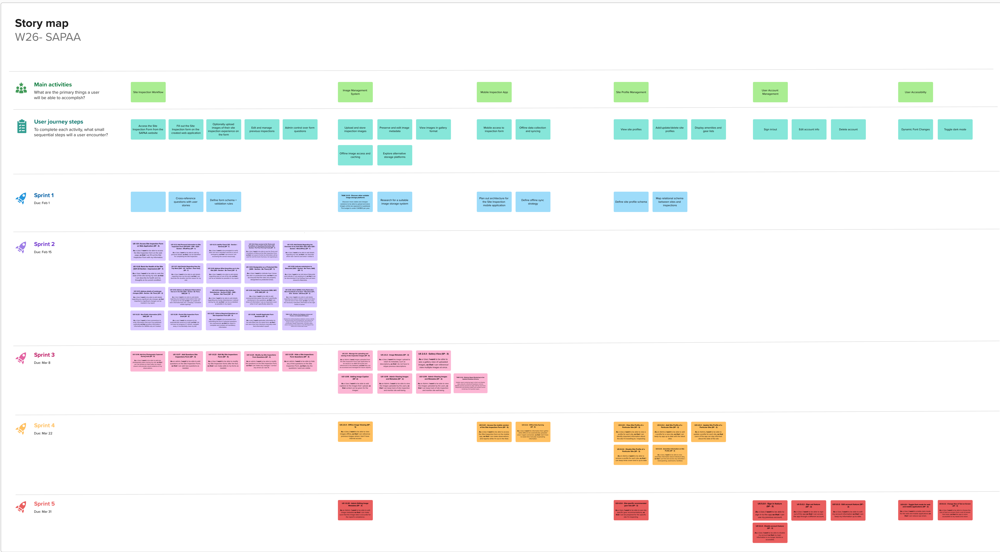

Project Management
This page provides a general overview of the assigned tasks and roles for the duration of five sprints (subject to change).
Story Map

Project Plan
Project Scrum Master: Jason Liang
Project Product Owner: Harveer Deol
Sprint 1
Due: February 1, 2026
Tasks
| Task | Related US | Assignee | Due |
|---|---|---|---|
| User Stories | Documentation | Everyone | Jan 30th |
| Project Requirements Doc | Documentation | Raiyana | Jan 30th |
| Architecture Diagram | Documentation | Vishal, Braden | Jan 30th |
| UML Diagram | Documentation | Braden | Jan 30th |
| Sequence Diagram | Documentation | Vishal | Jan 31st |
| User Interface Mockup | Documentation | Jason, Akib, Braden | Jan 31st |
| Software Design Doc | Documentation | Raiyana | Feb 1st |
| Project Management Doc | Documentation | Jason, Raiyana, Vishal | Feb 1st |
| Team Canvas | Documentation | Everyone | Jan 31st |
| Teamwork Doc | Documentation | Jason | Jan 31st |
| Research and evaluate image management options | TASK 2.0.5 | Harveer, Zoe, Akib, Raiyana | Jan 29th |
| Understand the previous project database | TASK 1.0.21 | Harveer, Jason, Vishal, Braden | Jan 27th |
Sprint 2
Due: February 15, 2026
User stories
| User Story | Story points |
|---|---|
| US 1.0.1 – Access Site Inspection Form on Web Application | 3 |
| US 1.0.2 – Add Personal Information to Site Inspection Form [Q11-Q14 + Q16 + Q24 - Section : WhoRYou] | 1 |
| US 1.0.3 - Liability Check [Q2 - Section : General] | 1 |
| US 1.0.4 - Have access to the Terms and Conditions of Inputting Information [Q3 - Section: The Fine Print Up Front] | 1 |
| US 1.0.5 - Add Details Regarding the Overview of my Visit [Q21, Q22, Q23, Q25 - Section : WhereRYou] | 1 |
| US 1.0.6 - Rank the Health of the Site [Q31-33 Section : Impression] | 1 |
| US 1.0.7 - Add Details Regarding How the Trip Went [Q41 - 43 - Section : How Visit] | 1 |
| US 1.0.8 - Address What Amenities are in the Site [Q51 : Section - Be There] | 1 |
| US 1.0.9 - Designation as a Protected Site [Q55 - Section : Be There] | 1 |
| US 1.0.10 - Indicate submissions to iNaturalist [Q53 - Section : Be There, Q68] | 1 |
| US 1.0.11 - Address details of Landscape changes [Q54 - Section : Be There] | 2 |
| US 1.0.12 - Address any Biological Observations that are in the Site [Q52 - Section : Be There, Q68] | 1 |
| US 1.0.13 - Address Any Human Disturbances - Section 8 [Q61 - Q66 - Section : Not There] | 1 |
| US 1.0.14 - Add Other Comments [Q56, Q67, Q74, Q82] | 2 |
| US 1.0.15 - Inform SAPAA of Any Restorative Work that Needs to be Done / Was Done [Q71, Q72 - Section : 2B Done] | 2 |
| US 1.0.23 - Non-Public Information [Q73, Q83] | 2 |
| US 1.0.26 - Persist Site Inspection Form Draft | 5 |
| US 1.0.27 - Enforce Required Questions on Site Inspection Form | 3 |
| US 1.0.28 - Autofill Applicable Form Questions | 3 |
| TASK 1.0.29 - Refactor the Database Schema and Produce an Updated ER Diagram | N/A |
Sprint Velocity: 33
Tasks
| Task | Related US | Assignee | Due |
|---|---|---|---|
| Build the Site Inspection Form entry point | US 1.0.1 | Vishal, Jason, Raiyana | Feb 7th |
| Refactor the Database Schema | TASK 1.0.29 | Raiyana, Zoe | Feb 7th |
| Understand previous team's implementation to repurpose for our schema | US 1.0.1 | Vishal, Harveer, Jason, Braden | Feb 7th |
| Produce an Updated ER Diagram | TASK 1.0.29 | Raiyana | Feb 7th |
| Add the liability check and access gate | US 1.0.3 | Harveer | Feb 8th |
| Add the Terms & Conditions acceptance flow | US 6B.01 | Harveer | Feb 8th |
| Create the personal information section | US 1.0.2 | Braden | Feb 11th |
| Create the visit overview and site selection section | US 1.0.5 | Vishal | Feb 11th |
| Add the non‑public information fields | US 1.0.23 | Harveer | Feb 11th |
| Develop the site health and impression section | US 1.0.6 | Zoe | Feb 11th |
| Develop the trip details and visit reasoning section | US 1.0.7 | Braden | Feb 11th |
| Add the landscape change reporting fields | US 1.0.11 | Braden | Feb 11th |
| Add the biological observations section | US 1.0.12 | Jason | Feb 11th |
| Add the human disturbances reporting section | US 1.0.13 | Zoe | Feb 11th |
| Create the amenities and ease‑of‑use section | US 1.0.8 | Akib | Feb 11th |
| Create the protected site designation section | US 1.0.9 | Akib | Feb 11th |
| Add the iNaturalist submission indicator | US 1.0.10 | Akib | Feb 11th |
| Add the additional comments and free‑text section | US 1.0.14 | Vishal, Raiyana | Feb 11th |
| Add the restoration actions and stewardship section | US 1.0.15 | Zoe | Feb 12th |
| Persist Site Inspection Form Draft | US 1.0.26 | Jason, Raiyana | Feb 12th |
| Enforce Required Questions on Site Inspection Form | US 1.0.27 | Jason, Akib | Feb 12th |
| Autofill Applicable Form Questions | US 1.0.15 | Zoe | Feb 12th |
| Assemble all sections into a unified form schema | All US | Everyone | Feb 14th |
| Finalize the submission flow and validation logic | All US | Everyone | Feb 14th |
| Write acceptance tests | All US | Everyone | Feb 14th |
| Update documentation | Documentation | Everyone | Feb 14th |
Sprint Velocity: 33
Sprint 3
Due: March 8, 2026
User stories
| User Story | Story points |
|---|---|
| US 1.0.16 – Add Any Photography Captured During Visit | 5 |
| US 1.0.17 – (Admin) Add Questions Site Inspections Form | 3 |
| US 1.0.18 – Adding Image Caption | 2 |
| US 1.0.19 - Admin Viewing Images and Metadata | 2 |
| US 1.0.22 – (User) Edit My Site Inspections Form | 5 |
| US 1.0.24 – Modify my Site Inspections Form Questions | 3 |
| US 1.0.25 – Hide a Site Inspections Form Questions | 3 |
| US 2.0.1 – Manage the uploading and storing of site inspection images | 8 |
| US 2.0.2 – Image Metadata | 2 |
| US 2.0.3 – Gallery View | 3 |
| TASK 2.0.6 - Refactor Report Rendering to Use Updated Database Schema | N/A |
Sprint Velocity: 36
Tasks
| Task | Related US | Assignee | Due |
|---|---|---|---|
| Setup AWS account with client | All US | Harveer | Feb 20th |
| Setup developer email for vercel with client | All US | Harveer | Feb 20th |
| Add any photography captured during visit | US 1.0.16 | Raiyana | Feb 25th |
| Allow admin to add Questions Site Inspections Form | US 1.0.17 | Braden | Feb 27th |
| Adding Image Caption to the inspection form | US 1.0.18 | Zoe | Feb 27th |
| Add a dashboard for admin to view images and metadata | US 1.0.19 | Zoe | Mar 3rd |
| Add the ability to edit previous site inspections forms for users | US 1.0.22 | Vishal | Mar 3rd |
| Let admin modify the site inspections form questions | US 1.0.24 | Jason | Mar 3rd |
| Add ability to hide site inspection form questions | US 1.0.25 | Braden, Jason | Mar 5th |
| Manage the uploading and storing of site inspection images onto S3 | US 2.0.1 | Harveer | Mar 5th |
| Image Metadata | US 2.0.2 | Akib | Mar 5th |
| Gallery View | US 1.0.12 | Akib | Mar 5th |
| Refactor Report Rendering to Use Updated Database Schema | TASK 2.0.6 | Everyone | Mar 7th |
| Finalize the submission flow and validation logic | All US | Everyone | Mar 7th |
| Write acceptance tests | All US | Everyone | Mar 7th |
| Update documentation | Documentation | Everyone | Mar 8th |
Sprint Velocity: 36
Sprint 4
Due: March 22, 2026
User stories
| User Story | Story points |
|---|---|
| US 2.0.4 – Offline Image Viewing | 5 |
| US 3.0.1 – Access the mobile version of the Site Inspection Form | 5 |
| US 3.0.2 – Offline Data Syncing | 8 |
| US 4.0.1 – View Site Profile of a Particular Site | 3 |
| US 4.0.2 – Add Site Profile of a Particular Site | 2 |
| US 4.0.3 – Update Site Profile of a Particular Site | 3 |
| US 4.0.4 – Disable Site Profile of a Particular Site | 3 |
| US 4.0.5 – Amenities Information on Site Profile | 2 |
Sprint Velocity: 31
Sprint 5
Due: March 31, 2026
User stories
| User Story | Story points |
|---|---|
| US 1.0.20 – Admin Editing Image Metadata | 3 |
| US 4.0.6 – Site-specific Recommended Gear Lists | 2 |
| US 5.0.1 – Sign In Feature | 2 |
| US 5.0.2 – Sign Out Feature | 2 |
| US 5.0.3 – Edit Account Feature | 2 |
| US 5.0.4 – Disable Account Feature | 2 |
| US 6.0.1 – Toggle Dark mode for web and mobile applications | 2 |
| US 6.0.2 – Change Text Size on Screen | 3 |
Sprint Velocity: 18